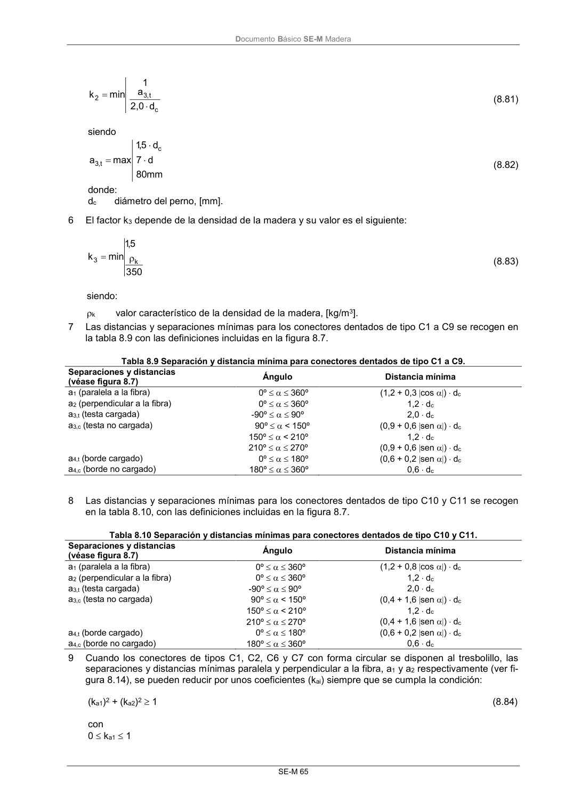

DB-SE-M · 6 El factor k3 depende de la densidad de la madera y su valor es el siguiente: · versión 2019-12-20
SHA256: 26b5819839ebfda78b0b119c5e76a0a37773b0d763c05688541870075df93718 · página física 71 de 132 · métodos de encabezado
solo si están cotejados.
Formatos: Markdown · JSON de bloques · PDF p. 71 · imagen PNG
Documento Básico SE-M Madera
SE-M 65
c
t,
3
2
d
2,0
a
1
min
k
(8.81)
siendo
mm
80
d
7
d
5,1
max
a
c
t,
3
(8.82)
donde:
dc
diámetro del perno, [mm].
6
El factor k3 depende de la densidad de la madera y su valor es el siguiente:
350
5,1
min
k
k
3
(8.83)
siendo:
k
valor característico de la densidad de la madera, [kg/m3].
7
Las distancias y separaciones mínimas para los conectores dentados de tipo C1 a C9 se recogen en
la tabla 8.9 con las definiciones incluidas en la figura 8.7.
Tabla 8.9 Separación y distancia mínima para conectores dentados de tipo C1 a C9.
Separaciones y distancias
(véase figura 8.7)
Ángulo
Distancia mínima
a1 (paralela a la fibra)
0º 360º
(1,2 + 0,3 cos ) dc
a2 (perpendicular a la fibra)
0º 360º
1,2 dc
a3,t (testa cargada)
-90º 90º
2,0 dc
a3,c (testa no cargada)
90º < 150º
(0,9 + 0,6 sen ) dc
150º < 210º
1,2 dc
210º 270º
(0,9 + 0,6 sen ) dc
a4,t (borde cargado)
0º 180º
(0,6 + 0,2 sen ) dc
a4,c (borde no cargado)
180º 360º
0,6 dc
8
Las distancias y separaciones mínimas para los conectores dentados de tipo C10 y C11 se recogen
en la tabla 8.10, con las definiciones incluidas en la figura 8.7.
Tabla 8.10 Separación y distancias mínimas para conectores dentados de tipo C10 y C11.
Separaciones y distancias
(véase figura 8.7)
Ángulo
Distancia mínima
a1 (paralela a la fibra)
0º 360º
(1,2 + 0,8 cos ) dc
a2 (perpendicular a la fibra)
0º 360º
1,2 dc
a3,t (testa cargada)
-90º 90º
2,0 dc
a3,c (testa no cargada)
90º < 150º
(0,4 + 1,6 sen ) dc
150º < 210º
1,2 dc
210º 270º
(0,4 + 1,6 sen ) dc
a4,t (borde cargado)
0º 180º
(0,6 + 0,2 sen ) dc
a4,c (borde no cargado)
180º 360º
0,6 dc
9
Cuando los conectores de tipos C1, C2, C6 y C7 con forma circular se disponen al tresbolillo, las
separaciones y distancias mínimas paralela y perpendicular a la fibra, a1 y a2 respectivamente (ver fi-
gura 8.14), se pueden reducir por unos coeficientes (kai) siempre que se cumpla la condición:
(ka1)2 + (ka2)2 1
(8.84)
con
0 ka1 1
